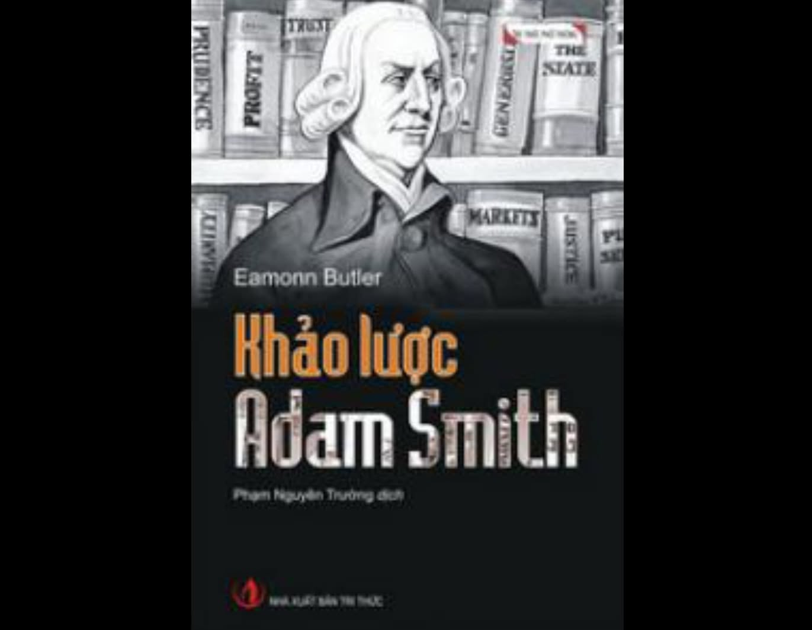

Khảo lược Adam Smith
Eamonn Butler

Cung cấp cái nhìn ngắn gọn, cô đọng nhưng toàn diện nhất về cuộc đời, bối cảnh thời đại và tư tưởng cốt lõi của Adam Smith – người được mệnh danh là "cha đẻ của kinh tế học hiện đại"
🗺️ Bố cục và nội dung tư tưởng cốt lõi
Thay vì đi sâu vào các cuộc tranh luận kinh tế phức tạp, tác giả Eamonn Butler hệ thống hóa di sản của Adam Smith thông qua hai tác phẩm lớn nhất của ông:
Lý thuyết về các tình cảm đạo đức (The Theory of Moral Sentiments)
• Khảo sát bản chất con người dựa trên lòng trắc ẩn và sự đồng cảm.
• Giải thích cách con người tự điều chỉnh hành vi đạo đức cá nhân để hòa hợp với xã hội mà không cần một hệ thống luật pháp áp đặt nặng nề.
Sự thịnh vượng của các quốc gia (The Wealth of Nations)
• Sự phân công lao động: Giải thích vì sao việc chuyên môn hóa quy trình sản xuất lại tạo ra sự bùng nổ về năng suất và sự giàu có cho xã hội.
• Bàn tay vô hình (The Invisible Hand): Luận điểm cho rằng khi mỗi cá nhân tự do theo đuổi lợi ích chính đáng của riêng mình, họ vô tình thúc đẩy lợi ích chung của toàn xã hội thông qua cơ chế vận động tự nhiên của thị trường tự do.
• Thương mại tự do: Phê phán mạnh mẽ chủ nghĩa trọng thương (tích trữ vàng bạc, dựng hàng rào thuế quan) và ủng hộ một nền kinh tế mở, cạnh tranh lành mạnh.
• Vai trò giới hạn của chính phủ: Nhà nước chỉ nên tập trung vào 3 nhiệm vụ quốc phòng, tư pháp - pháp luật, và xây dựng hạ tầng công cộng.